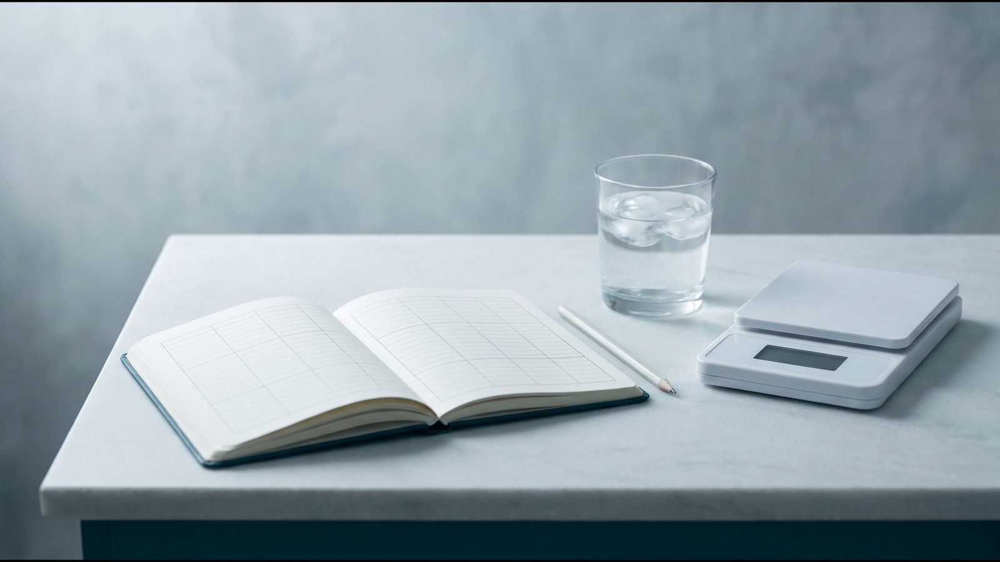

Вес стоит на месте: почему не получается похудеть и что проверить

Вес стоит: нормальное колебание или настоящее плато
Если вес стоит на месте несколько дней, это ещё не плато: цифру на весах каждый день сдвигает вода, в том числе связанная с гликогеном (запасом углеводов) в печени и мышцах. Плато — это когда средний вес не снижается неделями при том же питании и движении. Тогда причину ищут среди восьми факторов ниже и ведут дневник для врача.
В исследовании Khosla и Billewicz (Br J Nutr, 1964) типичное отклонение веса от его тренда составляло около 0,5 %, а за сутки вес редко менялся больше чем на 1,5 %. Есть и недельный ритм: в выходные вес немного растёт, в будни снижается, в среднем на 0,35 % (Turicchi, PLoS One, 2020). Гликоген хранится с водой (3–4 части воды на одну часть гликогена, Kreitzman, 1992), поэтому изменение количества углеводов сдвигает вес даже при той же калорийности (Hall, Lancet, 2011).
Солёная еда может временно задерживать жидкость и давать отёки (NHS), но точных данных, насколько именно это меняет вес, нет. В дни менструации вес в среднем был примерно на 0,5 кг выше, чем в первую неделю цикла, в основном из-за внеклеточной воды (Kanellakis, Am J Hum Biol, 2023), однако от цикла к циклу картина разная (Watson и Robinson, 1965), а в части исследований изменений веса не нашли (Faratian, 1984). Дни цикла и солёную еду отмечайте в дневнике.
Общепринятого порога, после скольких недель без изменений начинается плато, нет (Horn, Clin Obes, 2025); в анализе исследований тирзепатида, например, плато считали изменение веса меньше чем на 5 % за 12 недель и далее. Так что смотрите на тенденцию за несколько недель. В клинических исследованиях похудения вес обычно выходит на плато примерно через 6 месяцев (метаанализ Franz, J Am Diet Assoc, 2007); почему вес стоит именно тогда, объясняет раздел «Адаптация метаболизма».
Самопроверка: 8 вопросов
Почему я не худею? Отвечайте «да» или «нет»: каждый вопрос ведёт к разделу ниже.
- Взвешиваетесь ли вы в одних и тех же условиях и смотрите ли на средний вес за неделю? (раздел выше)
- Записываете ли вы всё съеденное и выпитое? («Недооценённые калории»)
- Вы уже заметно похудели и худеете несколько месяцев? («Адаптация метаболизма»)
- Менялось ли недавно количество углеводов и соли в рационе или фаза цикла? («Задержка жидкости, цикл, сон и стресс»)
- Спите ли вы меньше обычного, был ли в последнее время сильный стресс? (тот же раздел)
- Начинали ли вы за последние месяцы новые лекарства, менял ли врач дозу прежних? («Лекарства и гормональные состояния»)
- Есть ли у вас гипотиреоз, синдром поликистозных яичников, преддиабет или диабет, и когда вы последний раз сдавали анализы? (тот же раздел)
- Вам больше 40, идёт менопаузальный переход, недавно были роды? («Вес стоит после 40 и после родов»)
Недооценённые калории
В исследовании Lichtman (NEJM, 1992) 10 человек с ожирением, считавших себя «устойчивыми к диетам», тратили энергию в пределах 5 % от ожидаемого, но недооценивали съеденное в среднем на 47 %, а активность переоценивали на 51 %. Дело не в нечестности: самоотчёт неточен, поэтому дневник должен быть подробным.
В записях легко пропустить сладкие напитки и соки, алкоголь, масло, соусы, «попробовать» во время готовки и перекусы на ходу. Как вести дневник:
- записывайте сразу после еды, а не вечером по памяти;
- несколько дней взвешивайте порции кухонными весами, чтобы научиться оценивать их на глаз;
- напитки, соусы и масло пишите отдельными строками или фотографируйте каждую тарелку.
Примерную потребность покажет калькулятор калорий.
Адаптация метаболизма
Адаптация метаболизма означает, что при похудении организм тратит меньше энергии: меньшему телу её нужно меньше, и тот же рацион со временем даёт меньший дефицит. Именно этого не учитывает популярное правило «500 ккал в день = 0,5 кг в неделю»: Hall (Lancet, 2011) называет его ошибочным, потому что оно завышает прогноз, и чем дольше, тем больше ошибка.
По модели Hall, если мужчина весом 100 кг с сидячим образом жизни стабильно съедает на 480 ккал в сутки меньше, его вес приближается к новому равновесию, около 75 кг: половину пути он проходит примерно за год, 95 % — за 3 года. При этом типичное плато через 6–8 месяцев модель объясняет прежде всего тем, что со временем людям труднее держаться исходного рациона; сначала проверьте дневник.
У 14 участников телешоу The Biggest Loser через 6 лет расход энергии в покое был примерно на 500 ккал в сутки ниже ожидаемого для их веса и состава тела (Fothergill и Hall, Obesity, 2016). Но это экстремальная выборка (минус 58 кг за 30 недель шоу), поэтому на обычное похудение эти цифры не переносятся.
Задержка жидкости, цикл, сон и стресс
О воде, соли и цикле шла речь в начале статьи; задержку жидкости даёт и нелеченый гипотиреоз (раздел ниже).
Недосып усиливает голод и меняет уровень гормонов аппетита (Spiegel, 2004); подробнее в статье постоянно хочется есть. Стресс связан с набором веса очень слабо: в метаанализе 14 когортных исследований (Wardle, Obesity, 2011) большинство анализов значимой связи не нашли. Затяжной стресс всё равно записывайте в дневник.
Раз в неделю измеряйте талию: NICE NG246 советует оценивать её вместе с ИМТ как показатель жира на животе. Если вес стоит, а талия уменьшается, изменения есть, просто весы их не показывают.
Лекарства и гормональные состояния
Гипотиреоз, СПКЯ, инсулинорезистентность
Гипотиреоз — сниженная функция щитовидной железы. По данным Американской тиреоидной ассоциации (ATA), с ним обычно связано 2,3–4,5 кг веса, в основном соли и воды, а после лечения способность похудеть такая же, как у людей без болезней щитовидной железы. Если другие симптомы прошли, а вес нет, набор, по мнению ATA, вряд ли был только из-за щитовидной железы.
Синдром поликистозных яичников (СПКЯ) Комиссия Lancet (2025) вместе с ановуляцией и редкими менструациями включила в признаки клинического ожирения, а международное руководство по СПКЯ 2023 года подчёркивает его метаболические последствия и здоровый образ жизни.
Инсулинорезистентность, по определению NIDDK, — состояние, при котором клетки мышц, жировой ткани и печени плохо реагируют на инсулин, гормон поджелудочной железы. Она может приводить к повышению глюкозы в крови и набору веса; риск повышают избыточный вес, большая окружность талии, СПКЯ и некоторые лекарства. Симптомов обычно нет, а отдельный тест на неё используют в основном в исследованиях, поэтому врач смотрит на глюкозу и гликированный гемоглобин (HbA1c).
Лекарства, которые могут повышать вес
Руководство Endocrine Society (2015) связывает с набором веса, в частности, такие лекарства и для многих описывает более нейтральные варианты:
- сахароснижающие: инсулин, производные сульфонилмочевины, пиоглитазон;
- антидепрессанты: пароксетин, амитриптилин, миртазапин;
- антипсихотики: оланзапин, клозапин, кветиапин, рисперидон;
- противосудорожные: вальпроевая кислота, габапентин, прегабалин, карбамазепин (а топирамат и зонисамид, наоборот, снижают вес);
- глюкокортикоиды, инъекционные гормональные контрацептивы, антиретровирусная терапия, часть β-блокаторов и антигистаминных препаратов.
Отменять или менять препарат самостоятельно нельзя, это решение врача, который его назначил; если вес начал расти после нового препарата, покажите ему дату начала в дневнике.
Вес стоит после 40 и после родов
NHS среди факторов, из-за которых труднее держать вес, называет возраст старше 55 лет, менопаузу и перименопаузу. В менопаузальном переходе меняется прежде всего состав тела (исследование SWAN), поэтому изменения заметнее по талии, чем на весах; подробнее — в статье как начать худеть.
После родов многое зависит от того, сколько женщина набрала во время беременности. В метаанализе 17 исследований (Rong, Public Health Nutr, 2015) при избыточной прибавке женщины удерживали после родов в среднем на 3,2 кг больше, чем при адекватной, и определяла это именно прибавка, а не ИМТ до беременности. Дефицит калорий во время грудного вскармливания обсуждайте с врачом.
Дневник на 14 дней
Дневник даёт врачу данные вместо ощущения «не могу похудеть, ничего не помогает». Ведите его 14 дней подряд, не меняя режим специально под записи: вес утром в одинаковых условиях, окружность талии на 1-й, 7-й и 14-й день, всё съеденное и выпитое с примерными порциями, сон, шаги, самочувствие, стресс, день цикла и новые лекарства.
| День | Вес, кг | Сон, ч | Еда и напитки | Шаги, тренировки | Самочувствие, стресс, цикл, лекарства |
|---|---|---|---|---|---|
| 1 | |||||
| 2 | |||||
| 3 | |||||
| 4 | |||||
| 5 | |||||
| 6 | |||||
| 7 | |||||
| 8 | |||||
| 9 | |||||
| 10 | |||||
| 11 | |||||
| 12 | |||||
| 13 | |||||
| 14 |
На консультации врач сравнит средний вес двух недель, посмотрит, совпадают ли скачки с солью, циклом, недосыпом или лекарствами, и решит, нужны ли анализы.

Частые вопросы
Почему вес стоит две недели?
За две недели плато не определить: вес ежедневно колеблется до 1,5 %, на него влияют углеводы, соль, цикл и сон, а общепринятого порога для плато нет. Ответьте на 8 вопросов выше и заполните дневник; если средний вес второй недели не изменился, обсудите записи с врачом.
Может ли быть плато в самом начале?
В первые недели вес часто снижается быстрее, отчасти из-за воды, которая уходит вместе с гликогеном (Kreitzman, 1992), а потом темп замедляется, и это похоже на плато. При этом в исследованиях с контролируемым питанием вес первые 6 месяцев снижается почти равномерно (Hall, Lancet, 2011). Если вес не сдвинулся с первых недель, проверьте дневник питания и новые лекарства.
Какие анализы сдать, если не худею?
Перечень определяет врач; базовый набор по EASO (2019) — глюкоза натощак, липидограмма, печёночные пробы, креатинин, затем ТТГ. Как подготовиться — в статье подготовка к консультации эндокринолога.
Поможет ли голодание?
Диеты менее 800 ккал в сутки NICE NG246 допускает только в специализированной службе при медицинской необходимости, не как долгосрочную стратегию, и предупреждает о возврате веса, запорах, усталости и выпадении волос; NIDDK добавляет риск желчных камней. Причину плато, которую покажет дневник, голодание не устраняет.
Что дальше
Заполните дневник 14 дней и обсудите его с эндокринологом: врач отличит колебания от плато и решит, нужны ли анализы. Консультация в Avelis онлайн и бесплатная.
Источники
- Khosla T, Billewicz WZ. Measurement of change in body-weight. Br J Nutr, 1964. https://doi.org/10.1079/BJN19640022
- Turicchi J et al. Weekly, seasonal and holiday body weight fluctuation patterns among individuals engaged in a European multi-centre behavioural weight loss maintenance intervention. PLoS One, 2020. https://doi.org/10.1371/journal.pone.0232152
- Kreitzman SN et al. Glycogen storage: illusions of easy weight loss, excessive weight regain, and distortions in estimates of body composition. Am J Clin Nutr, 1992. https://doi.org/10.1093/ajcn/56.1.292S
- Hall KD et al. Quantification of the effect of energy imbalance on bodyweight. Lancet, 2011. https://doi.org/10.1016/S0140-6736(11)60812-X
- NHS. Swollen ankles, feet and legs (oedema), 2026. https://www.nhs.uk/conditions/oedema/
- Kanellakis S et al. Changes in body weight and body composition during the menstrual cycle. Am J Hum Biol, 2023. https://doi.org/10.1002/ajhb.23951
- Watson PE, Robinson MF. Variations in body-weight of young women during the menstrual cycle. Br J Nutr, 1965. https://doi.org/10.1079/bjn19650023
- Faratian B et al. Premenstrual syndrome: weight, abdominal swelling, and perceived body image. Am J Obstet Gynecol, 1984. https://doi.org/10.1016/s0002-9378(84)80016-2
- Horn DB et al. Time to weight plateau with tirzepatide treatment in the SURMOUNT-1 and SURMOUNT-4 clinical trials. Clin Obes, 2025. https://doi.org/10.1111/cob.12734
- Franz MJ et al. Weight-loss outcomes: a systematic review and meta-analysis of weight-loss clinical trials with a minimum 1-year follow-up. J Am Diet Assoc, 2007. https://doi.org/10.1016/j.jada.2007.07.017
- Lichtman SW et al. Discrepancy between self-reported and actual caloric intake and exercise in obese subjects. N Engl J Med, 1992. https://doi.org/10.1056/NEJM199212313272701
- Fothergill E, … Hall KD. Persistent metabolic adaptation 6 years after «The Biggest Loser» competition. Obesity, 2016. https://doi.org/10.1002/oby.21538
- Spiegel K et al. Brief communication: sleep curtailment in healthy young men is associated with decreased leptin levels, elevated ghrelin levels, and increased hunger and appetite. Ann Intern Med, 2004. https://doi.org/10.7326/0003-4819-141-11-200412070-00008
- Wardle J et al. Stress and adiposity: a meta-analysis of longitudinal studies. Obesity, 2011. https://doi.org/10.1038/oby.2010.241
- NICE. Overweight and obesity management (NG246), 2025, updated 2026. https://www.nice.org.uk/guidance/ng246
- American Thyroid Association. Thyroid and Weight. https://www.thyroid.org/thyroid-and-weight/
- Rubino F et al. Definition and diagnostic criteria of clinical obesity. Lancet Diabetes Endocrinol, 2025. https://doi.org/10.1016/S2213-8587(24)00316-4
- Teede HJ et al. Summary of the 2023 international evidence-based guideline for the assessment and management of polycystic ovary syndrome. Med J Aust, 2024. https://doi.org/10.5694/mja2.52432
- NIDDK. Insulin Resistance & Prediabetes, 2025. https://www.niddk.nih.gov/health-information/diabetes/overview/what-is-diabetes/prediabetes-insulin-resistance
- Apovian CM et al. Pharmacological management of obesity: an Endocrine Society clinical practice guideline. J Clin Endocrinol Metab, 2015. https://doi.org/10.1210/jc.2014-3415
- NHS. Overweight and obesity in adults, 2026. https://www.nhs.uk/conditions/overweight-and-obesity/
- Greendale GA et al. Changes in body composition and weight during the menopause transition (SWAN). JCI Insight, 2019. https://doi.org/10.1172/jci.insight.124865
- Rong K et al. Pre-pregnancy BMI, gestational weight gain and postpartum weight retention: a meta-analysis of observational studies. Public Health Nutr, 2015. https://doi.org/10.1017/S1368980014002523
- Durrer Schutz D et al. European Practical and Patient-Centred Guidelines for Adult Obesity Management in Primary Care (EASO). Obes Facts, 2019. https://pmc.ncbi.nlm.nih.gov/articles/PMC6465693/
- NIDDK. Dieting & Gallstones. https://www.niddk.nih.gov/health-information/digestive-diseases/gallstones/dieting
Материал носит информационный характер и не заменяет консультацию врача. Препараты назначает врач после консультации.
Читайте также